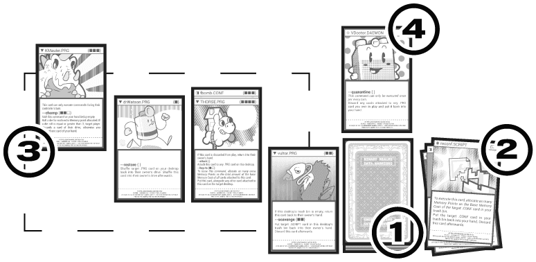
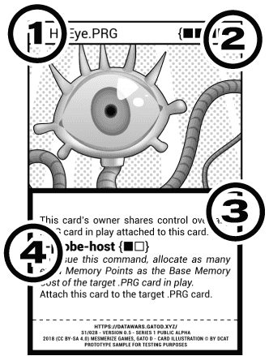

This is your desktop
This is the field in which you’ll play your cards.
- Your Drive. This is the deck from which you draw cards. The game is over for you if you have no cards remaining in your drive.
- Your Trash Bin. The cards that you own are discarded from the game are stored here.
- Your Program Manager. This is where .PRG cards and .CONF cards attached to them are in play. They can be in three states: loading, idle and running.
- Your Daemon Bench. This is where your .DAEMON cards can be loaded and kept in played.

The Cards
Every card in this game contains the following:
- An unique name and kind of card, indicated by both an icon and an extension appended to the name.
- Base Memory Cost, indicating the amount of Memory Points the card needs to allocate in order to be put in play.
- Card Effects that change in some way the cards and the game functions.
- Card Commands, indicated by their --name and {cost}

Four Kinds of Cards
There are four kinds of cards with particular abilities and different rules that apply to them. You must learn how these cards work to use them in your favor and win the match by using them strategically. Cards types are indicated by the extension appended at the end of their name, and the special icon at the top corner, prepended to their name.
.PRG cards (indicated with a ▼ symbol) are permanent cards that you put in play on your desktop. These cards can execute commands –special abilities that use Memory Points to execute– either if the card itself contains commands available to them or if any card explicitly allows them to do so (i.e. a card that can execute commands via other cards in play), and can also have special Card Effects that affect the way the game, or certain cards work. .PRG cards enter in game in Loading state, and go into Idle state on their next Memory Cleanup step, from where you’re able to issue commands via this card.
.DAEMON cards (indicated with a ◇ symbol) are similar to .PRG cards in which they enter in play on your desktop and can execute effects and commands, but they enter in play on Idle state and can execute commands immediately on RUN step. However, you can only have one in play on your desktop at a time. During your SETUP step you can choose to discard any .DAEMON card in play on your desktop, in case you need to play a different .DAEMON card.
.CONF cards (indicated with a ◨ symbol) are cards that attach to .PRG cards in play, changing the way the cards behave, for better or worse. Unless another card in play specifies otherwise, you can only attach .CONF cards to .PRG cards on your desktop.
.SCRIPT cards (indicated with a ◉ symbol) are cards that come instantly in play, sometimes doing one-time effects, other times lasting for an entire turn! They’re useful cards to have around, but their use-and-discard nature makes them very situational. These cards usually explain in detail their special rules in regards to scope and duration of their effects, so read them carefully!
Playing a match
All players (referred in game as users) start with a 30 card deck, called drives in game, and 8 Memory Points, indicated on their Memory Monitor.
Each player takes a turn rolling the 6-side die and take turns starting from the highest number in descending order. Solve any tie in turn order by re-rolling the die.
The 5 steps of each turn
A match is composed of turns that each user takes in their assigned order. A turn is composed of the following five steps:
Step 0x01 - Init
The current user drawns as many cards as they want from their drive until they have 5 in their hand. At least one card must be drawn from the drive.
Step 0x02 - Memory Cleanup
The current user deallocates the Memory Points used by their cards, and set all their .PRG cards in play to Idle state. From this point on, any .DAEMON, .CONF and .PRG cards in play on the current user’s desktop are considered to be active.
Step 0x03 - Setup
During this step, the current user can play any kind of card on their desktop, allocating Memory Points as needed. If the current user runs out of Memory Points during this step, their turn goes straight into the EXIT step.
Step 0x04 - Run
At this point, the current user can issue commands from idle .PRG and .DAEMON cards in play, as long as have either control or ownership of the card, alongside .SCRIPT cards from their hand. During this step, other users can also execute commands, always starting from current user in a stack-like fashion (last commands to be executed are the first to be resolved).
Step 0x05 - Exit
At this point, the turn is over. If the current user has more than 5 cards in their hand, they must discard cards from their hand until they have just 5. If any user has no cards left in their drive, they are considered out of the game. The last user standing in game wins.
More about commands...
Cards have their effects printed on them, but certain effects must be manually triggered to execute. These are called commands, and are shown as specific entries within the card’s body of text in between {curly braces} indicating the Base Memory Cost of the command with symbols. The ■ symbol indicates a Memory Point to allocate, while a □ symbol is meant to indicate a variable amount of Memory Points to allocate, as indicated by the command’s effects and/or requirements.
Commands can only be executed during the RUN step of each turn, and the first command to be issued is always the one issued by whoever is playing their turn, at the start of their Run step. Commands “pile up” in a stack-like fashion and resolve from the last issued command to the first one. So, for example, if you issue a command and an opponents issues another command in return, their command must be resolved before your command is able to resolve.
If the requirements of an issued command being resolved aren’t fulfilled then the command is considered unsuccessful, or halted, otherwise they’re evaluated as successfully executed. All unresolved commands issued by a card out of game are halted immediately.
You can only issue commands via cards in an Idle state, and only once any prerequisites have been fulfilled and Memory Points have been allocated the command is considered to be executed.
(Even more) notes and rules
Here are some notes and some extra rules about the game:
- You can only play cards on your desktop, unless some card specifies otherwise.
- During the Memory Cleanup step, a card that can’t deallocate any used Memory Points will still be able to return to Idle state.
- You can issue commands on response to another command, even if said command doesn’t target the one you’re following.
- You can’t execute commands via cards you don’t control, even if they’re in your desktop or you own them!
- You can discard .DAEMON cards at anytime during Setup step, and you can’t play other .DAEMON cards while there’s a .DAEMON card already in play on your desktop or under your control.
- While the ruleset dictates for Memory Monitors to be used to keep count on allocated Memory Points, and the rules indicate that card position indicate their current state, you could use tokens and/or card orientation to indicate the amount of allocated Memory Points and any special state each card is currently on.